Candidate List 20261007Last night — ZTF: 3,133 passed basic cuts (83 young) · LSST: 0 passed basic cuts (0 young)Previous Day Next Day
Section 1: New Sources (age<1d) Section 2: Old (1-5d) sources observed last nightplaceholder
Section 1: New Afterglow/FBOT Cands Last Night (1)
1. [ZTF] ZTF26abzxgsr (Afterglow?) [Back to Top] [Share] [Trigger Swift] [Fritz Alert] [Fritz Source] [Lasair]RA, Dec: 11.61428, -17.69239 0h46m27.43s, -17d-41m-32.60sGalactic (l, b): 115.73007, -80.49441 ext(g-r) = 0.022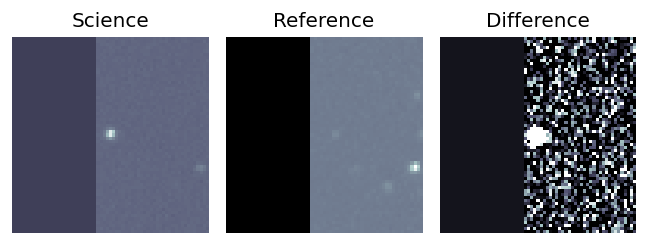
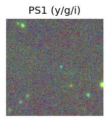
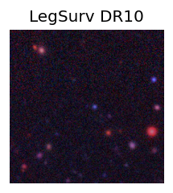
TESS: Sectors [ 3 30 107]
PS1: 0 sources in 3 arcsec
LegacySurvey: 1 sources in 3 arcsec Closest: d = 0.18 arcsec, 293.6 deg (east of north) photoz=1.23 (68% bounds 0.9, 1.53), type=PSF peak abs mag (ext. corrected) = -27.59 (68% bounds -26.76, -28.19)
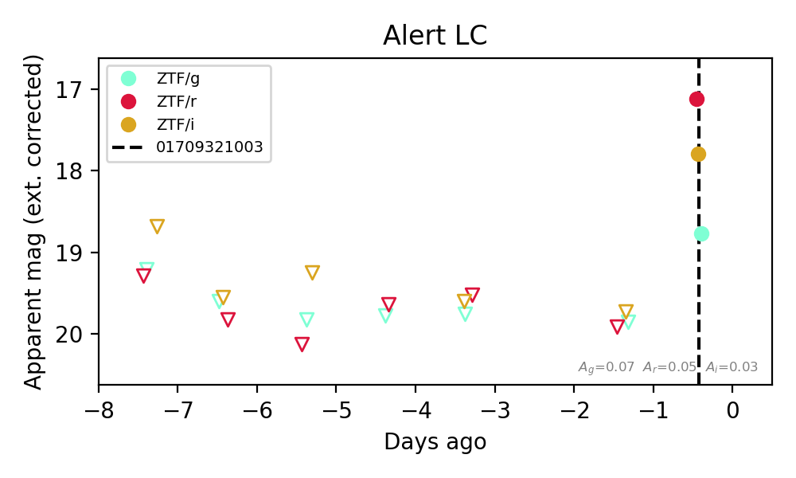
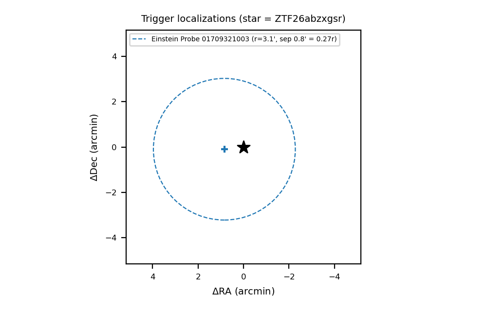
Extinction-corrected gr color:
From alerts: 1.65 +/- 0.09 mag
Extinction-corrected gi color:
From alerts: 0.97 +/- 0.11 mag
Extinction-corrected ri color:
From alerts: -0.68 +/- 0.07 mag
Consistent with synchrotron, g-r>0!
Rise Rate:
g: 1.18 mag/day
r: 2.79 mag/day
i: 2.1 mag/day
Fade Rate:
Section 2: Older Sources Observed Last Night (14)
0. [ZTF] ZTF26abyukgq (Afterglow?) [Back to Top] [Share] [Trigger Swift] [Fritz Alert] [Fritz Source] [Lasair]RA, Dec: 36.86998, 17.65749 2h27m28.79s, 17d39m26.96sGalactic (l, b): 153.10698, -39.52125 WARNING: 2.92 deg from ecliptic plane ext(g-r) = 0.338


TESS: Sectors [42 70 71]
PS1: 0 sources in 3 arcsec
LegacySurvey: 1 sources in 3 arcsec Closest: d = 0.52 arcsec, 156.6 deg (east of north) photoz=0.03 (68% bounds 0.03, 0.05), type=REX peak abs mag (ext. corrected) = -17.08 (68% bounds -16.51, -18.14)

Extinction-corrected gr color:
From alerts: 0.05 +/- 0.19 mag
Extinction-corrected gi color:
From alerts: -0.01 +/- 0.2 mag
Extinction-corrected ri color:
From alerts: -0.06 +/- 0.17 mag
Consistent with synchrotron, g-r>0!
Rise Rate:
r: 1.16 mag/day
i: 0.54 mag/day
Fade Rate:
r: 1.14 mag/day
i: 0.21 mag/day
1. [ZTF] ZTF26abzdlwx (FBOT?) [Back to Top] [Share] [Trigger Swift] [Fritz Alert] [Fritz Source] [Lasair]RA, Dec: 344.60551, 16.78398 22h58m25.32s, 16d47m2.32sGalactic (l, b): 87.69283, -38.23477 ext(g-r) = 0.063


TESS: Sectors 83
SDSS (<15 kpc):Found SDSS phot-z: z=0.16; peak abs mag = -19.78
PS1: 0 sources in 3 arcsec
LegacySurvey: 1 sources in 3 arcsec Closest: d = 1.67 arcsec, 177.9 deg (east of north) photoz=0.14 (68% bounds 0.12, 0.15), type=REX peak abs mag (ext. corrected) = -19.38 (68% bounds -19.16, -19.65)

Extinction-corrected gr color:
From alerts: -0.12 +/- 0.23 mag
Consistent with synchrotron, g-r>0!
Rise Rate:
g: 0.15 mag/day
r: 0.25 mag/day
Fade Rate:
2. [ZTF] ZTF26abziydc (FBOT?) [Back to Top] [Share] [Trigger Swift] [Fritz Alert] [Fritz Source] [Lasair]RA, Dec: 357.91577, 32.16331 23h51m39.78s, 32d 9m47.92sGalactic (l, b): 108.47516, -29.02486 ext(g-r) = 0.049


TESS: Sectors [57 84]
SDSS (<15 kpc):Found SDSS phot-z: z=0.05; peak abs mag = -17.65
PS1: 0 sources in 3 arcsec
LegacySurvey: 1 sources in 3 arcsec Closest: d = 1.01 arcsec, 162.6 deg (east of north) photoz=0.21 (68% bounds 0.09, 0.92), type=EXP peak abs mag (ext. corrected) = -20.87 (68% bounds -18.84, -24.62)

Extinction-corrected gr color:
From alerts: -0.21 +/- 0.18 mag
Extinction-corrected ri color:
From alerts: 1.28 +/- 99 mag
Rise Rate:
g: 0.32 mag/day
r: 0.26 mag/day
Fade Rate:
3. [ZTF] ZTF26abyvuai (Afterglow?) [Back to Top] [Share] [Trigger Swift] [Fritz Alert] [Fritz Source] [Lasair]RA, Dec: 331.50871, 48.0514 22h 6m2.09s, 48d 3m5.05sGalactic (l, b): 96.55949, -6.16902 ext(g-r) = 0.27


TESS: Sectors [ 16 56 57 76 77 83 84 121]
PS1: 1 source in 3 arcsec Closest: d = 3.69 arcsec photoz=0.18+/-0.02 peak abs mag = -20.01
LegacySurvey: 0 sources in 3 arcsec

Extinction-corrected gr color:
From alerts: 0.21 +/- 0.33 mag
Consistent with synchrotron, g-r>0!
Rise Rate:
r: 0.45 mag/day
Fade Rate:
r: 0.23 mag/day
4. [ZTF] ZTF26abzbxoh (Afterglow?) [Back to Top] [Share] [Trigger Swift] [Fritz Alert] [Fritz Source] [Lasair]RA, Dec: 319.06129, -10.72807 21h16m14.71s, -10d-43m-41.06sGalactic (l, b): 40.04533, -36.96648 WARNING: 4.89 deg from ecliptic plane ext(g-r) = 0.062


TESS: Sectors [ 92 116]
PS1: 0 sources in 3 arcsec
LegacySurvey: 0 sources in 3 arcsec

Extinction-corrected gi color:
From alerts: -0.2 +/- 0.18 mag
Extinction-corrected ri color:
From alerts: -0.07 +/- 0.29 mag
Consistent with synchrotron, g-r>0!
Rise Rate:
g: 0.6 mag/day
r: 0.2 mag/day
i: 0.33 mag/day
Fade Rate:
5. [ZTF] ZTF26abzqaqg (FBOT?) [Back to Top] [Share] [Trigger Swift] [Fritz Alert] [Fritz Source] [Lasair]RA, Dec: 353.98184, 22.85713 23h35m55.64s, 22d51m25.66sGalactic (l, b): 101.07537, -36.78909 ext(g-r) = 0.069


TESS: Sectors [56 83]
SDSS (<15 kpc):Found SDSS phot-z: z=0.82; peak abs mag = -23.44
PS1: 0 sources in 3 arcsec
LegacySurvey: 1 sources in 3 arcsec Closest: d = 0.76 arcsec, 266.0 deg (east of north) photoz=0.21 (68% bounds 0.15, 0.3), type=EXP peak abs mag (ext. corrected) = -19.98 (68% bounds -19.11, -20.82)

Extinction-corrected gr color:
From alerts: -0.12 +/- 0.26 mag
Consistent with synchrotron, g-r>0!
Rise Rate:
g: 0.31 mag/day
r: 0.02 mag/day
Fade Rate:
6. [ZTF] ZTF26abzximw (Afterglow?) [Back to Top] [Share] [Trigger Swift] [Fritz Alert] [Fritz Source] [Lasair]RA, Dec: 5.02792, -17.68137 0h20m6.70s, -17d-40m-52.92sGalactic (l, b): 83.89018, -78.10566 ext(g-r) = 0.04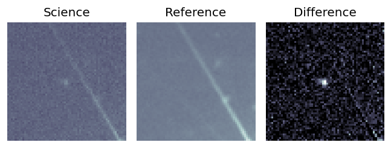
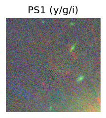
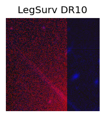
TESS: Sectors [ 29 69 107]
PS1: 0 sources in 3 arcsec
LegacySurvey: 0 sources in 3 arcsec
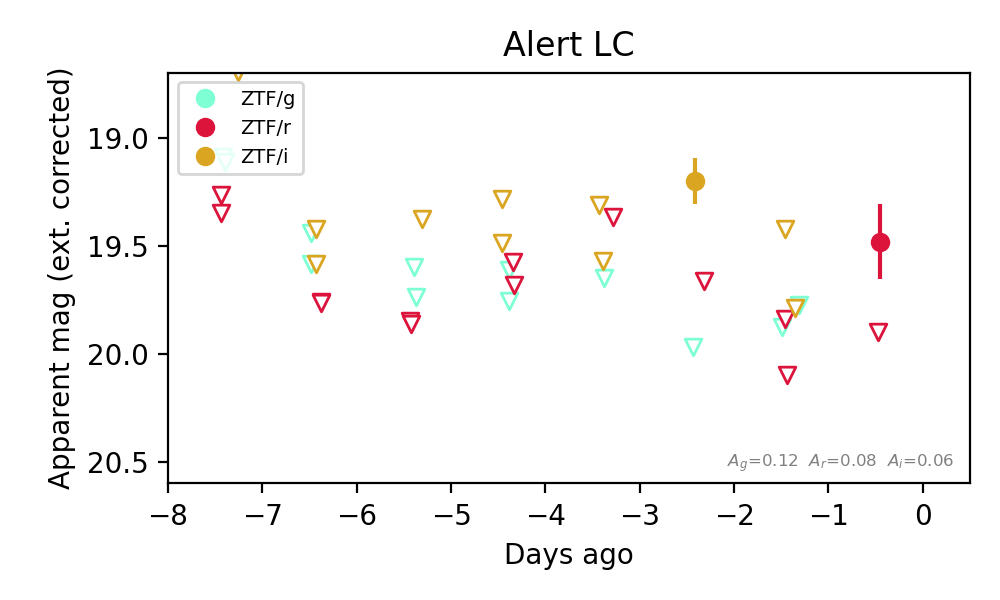
Extinction-corrected gi color:
From alerts: 0.77 +/- 99 mag
Extinction-corrected ri color:
From alerts: 0.47 +/- 99 mag
Rise Rate:
r: 19.29 mag/day
i: 0.38 mag/day
Fade Rate:
i: 0.56 mag/day
7. [ZTF] ZTF26acaahql (FBOT?) [Back to Top] [Share] [Trigger Swift] [Fritz Alert] [Fritz Source] [Lasair]RA, Dec: 32.48332, 10.76005 2h 9m56.00s, 10d45m36.17sGalactic (l, b): 152.22521, -47.5975 WARNING: -2.21 deg from ecliptic plane ext(g-r) = 0.107


TESS: Sectors [42 43 70 71]
NED host (10 arcsec):Found UGC 01662 (G, 9.3″); NED spec-z: z=0.0229 [zflag S1L]; peak abs mag = -15.95
PS1: 0 sources in 3 arcsec
LegacySurvey: 1 sources in 3 arcsec Closest: d = 0.92 arcsec, 250.5 deg (east of north) photoz=0.21 (68% bounds 0.02, 0.79), type=PSF peak abs mag (ext. corrected) = -20.97 (68% bounds -16.07, -24.39)

Extinction-corrected gr color:
From alerts: 0.3 +/- 0.2 mag
Extinction-corrected gi color:
From alerts: 0.44 +/- 0.13 mag
Extinction-corrected ri color:
From alerts: -0.0 +/- 0.11 mag
Consistent with synchrotron, g-r>0!
Rise Rate:
g: 0.11 mag/day
r: 0.34 mag/day
i: 0.09 mag/day
Fade Rate:
8. [ZTF] ZTF26acackpl (Afterglow?) [Back to Top] [Share] [Trigger Swift] [Fritz Alert] [Fritz Source] [Lasair]RA, Dec: 51.22465, -3.86832 3h24m53.92s, -3d-52m-5.94sGalactic (l, b): 187.33426, -46.63433 ext(g-r) = 0.04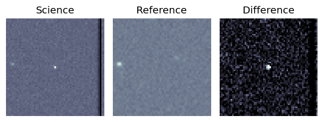
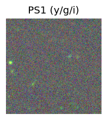
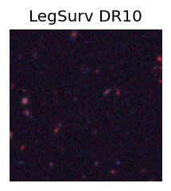
TESS: Sectors [ 4 31 109]
PS1: 0 sources in 3 arcsec
LegacySurvey: 1 sources in 3 arcsec Closest: d = 5.43 arcsec, 59.3 deg (east of north) photoz=1.01 (68% bounds 0.8, 1.2), type=REX peak abs mag (ext. corrected) = -25.97 (68% bounds -25.35, -26.43)
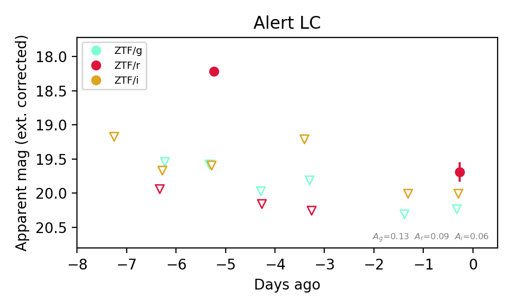
Extinction-corrected gr color:
From alerts: 0.54 +/- 99 mag
Extinction-corrected ri color:
From alerts: -0.32 +/- 99 mag
Rise Rate:
r: 1.56 mag/day
Fade Rate:
r: 2.01 mag/day
9. [ZTF] ZTF26acadsgc (Afterglow?) [Back to Top] [Share] [Trigger Swift] [Fritz Alert] [Fritz Source] [Lasair]RA, Dec: 140.14684, 43.04269 9h20m35.24s, 43d 2m33.70sGalactic (l, b): 178.03658, 44.85183 ext(g-r) = 0.017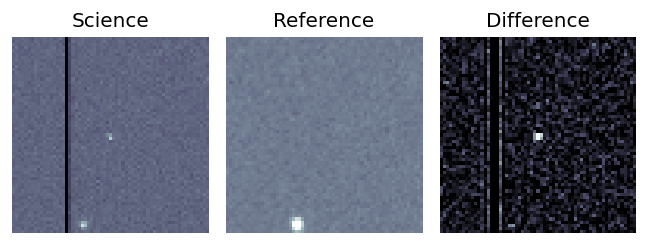
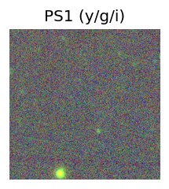
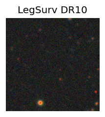
TESS: Sectors 21
PS1: 0 sources in 3 arcsec
LegacySurvey: 1 sources in 3 arcsec Closest: d = 6.15 arcsec, 68.9 deg (east of north) photoz=0.95 (68% bounds 0.73, 1.22), type=PSF peak abs mag (ext. corrected) = -25.89 (68% bounds -25.2, -26.55)
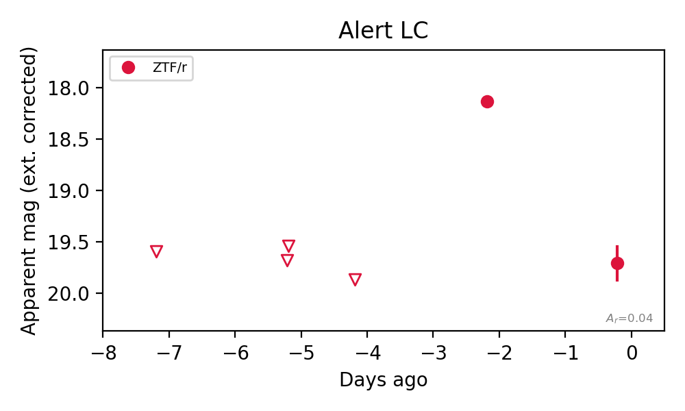
Rise Rate:
r: 0.87 mag/day
Fade Rate:
r: 0.8 mag/day
10. [ZTF] ZTF26acadvhp (Afterglow?) [Back to Top] [Share] [Trigger Swift] [Fritz Alert] [Fritz Source] [Lasair]RA, Dec: 149.56273, 39.36307 9h58m15.06s, 39d21m47.05sGalactic (l, b): 182.78924, 52.18532 ext(g-r) = 0.013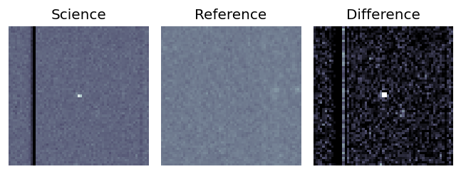
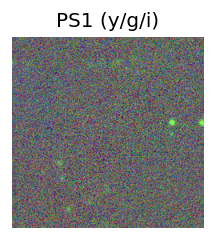
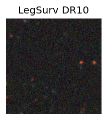
TESS: Sectors [21 48]
PS1: 0 sources in 3 arcsec
LegacySurvey: 0 sources in 3 arcsec
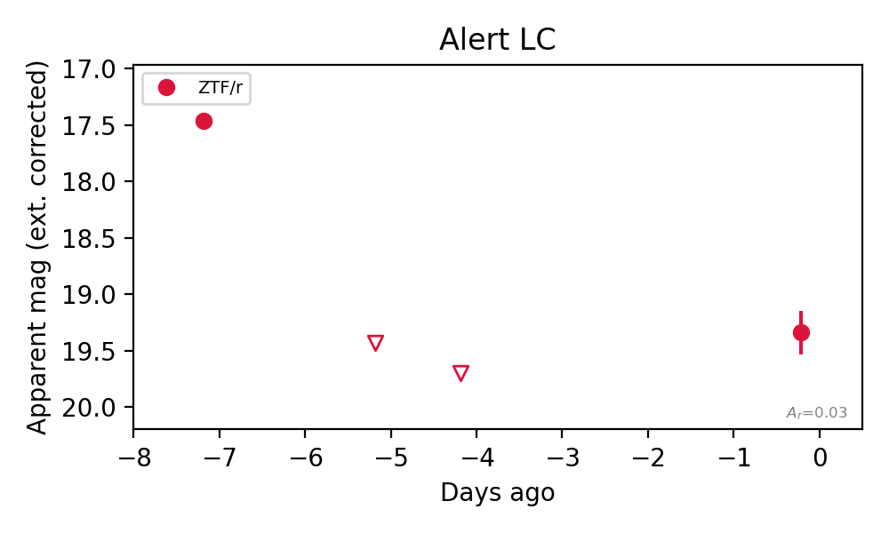
Rise Rate:
r: 1.75 mag/day
Fade Rate:
r: 0.98 mag/day
11. [ZTF] ZTF26acaeimi (Afterglow?) [Back to Top] [Share] [Trigger Swift] [Fritz Alert] [Fritz Source] [Lasair]RA, Dec: 143.57892, 31.53127 9h34m18.94s, 31d31m52.58sGalactic (l, b): 194.7728, 47.16635 ext(g-r) = 0.02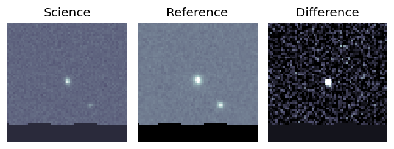
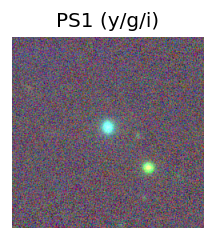
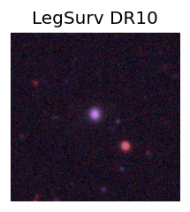
TESS: Sectors [21 48]
SDSS (<15 kpc):Found SDSS phot-z: z=0.09; peak abs mag = -19.35
PS1: 0 sources in 3 arcsec
LegacySurvey: 1 sources in 3 arcsec Closest: d = 1.01 arcsec, 9.4 deg (east of north) photoz=0.08 (68% bounds 0.07, 0.1), type=REX peak abs mag (ext. corrected) = -19.07 (68% bounds -18.64, -19.37)
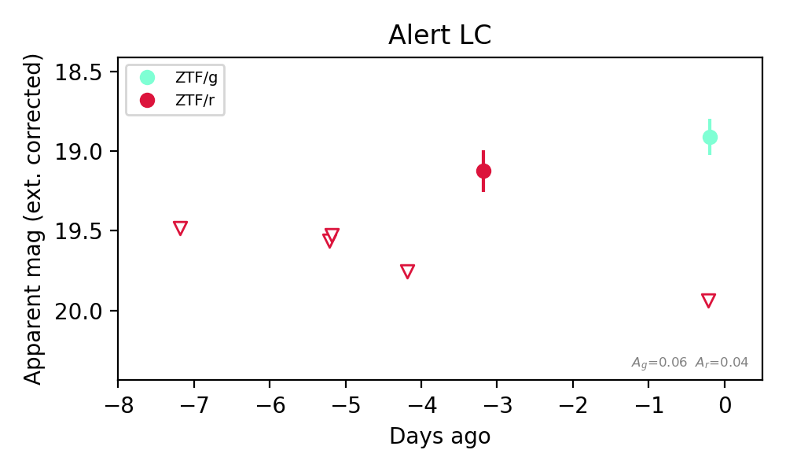
Extinction-corrected gr color:
From alerts: -1.03 +/- 99 mag
Rise Rate:
r: 0.63 mag/day
Fade Rate:
r: 0.27 mag/day
12. [ZTF] ZTF26acaejsu (Afterglow?) [Back to Top] [Share] [Trigger Swift] [Fritz Alert] [Fritz Source] [Lasair]RA, Dec: 130.37593, -7.18101 8h41m30.22s, -7d-10m-51.64sGalactic (l, b): 232.93197, 20.54557 ext(g-r) = 0.032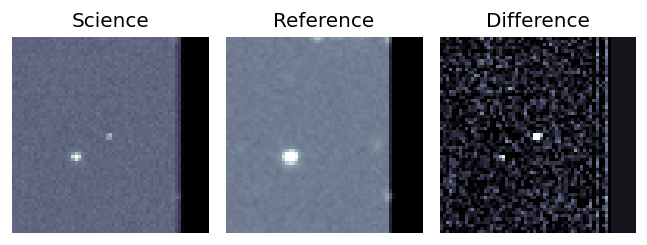
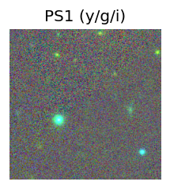
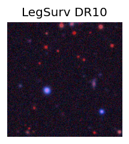
TESS: Sectors [ 8 34 61 88 99 112]
PS1: 0 sources in 3 arcsec
LegacySurvey: 0 sources in 3 arcsec
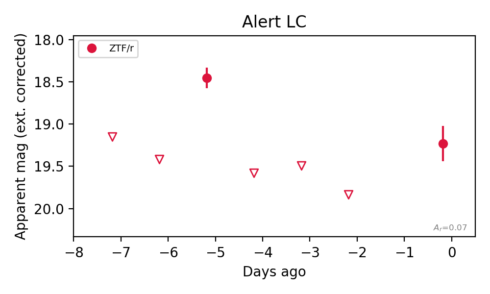
Rise Rate:
r: 0.96 mag/day
Fade Rate:
r: 1.13 mag/day
13. [ZTF] ZTF26acaelei (FBOT?) [Back to Top] [Share] [Trigger Swift] [Fritz Alert] [Fritz Source] [Lasair]RA, Dec: 127.51631, 1.57928 8h30m3.92s, 1d34m45.41sGalactic (l, b): 223.26426, 22.56389 ext(g-r) = 0.046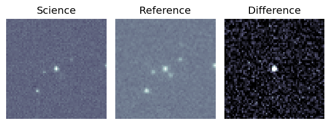
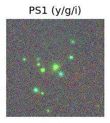
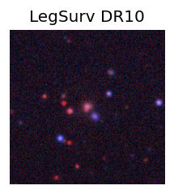
Milliquas v8 (2 arcsec):Found None (description), name = None, QSO probability: None %
TESS: Sectors [ 7 34 61 112]
SDSS (<15 kpc):Found SDSS phot-z: z=0.36; peak abs mag = -22.47
PS1: 0 sources in 3 arcsec
LegacySurvey: 1 sources in 3 arcsec Closest: d = 0.04 arcsec, 64.4 deg (east of north) photoz=0.33 (68% bounds 0.29, 0.41), type=SER peak abs mag (ext. corrected) = -22.3 (68% bounds -21.92, -22.85)
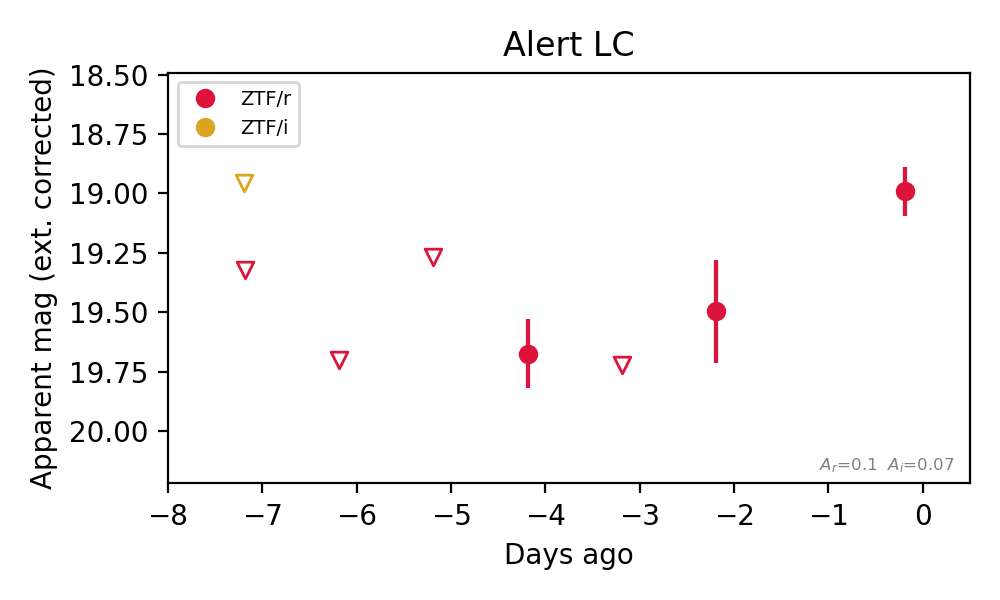
Rise Rate:
r: 0.24 mag/day
Fade Rate: